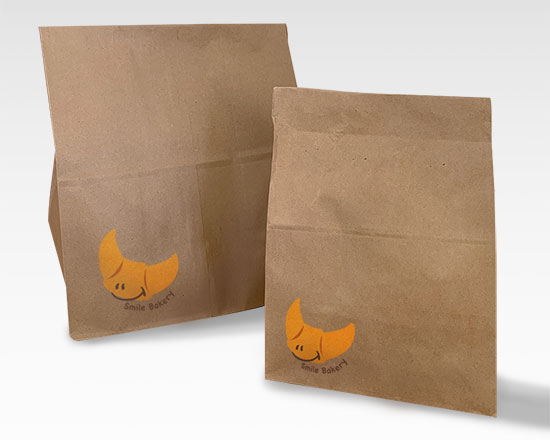

Smile Baker Logo


Overview
Project Type:
Personal work
Goal:
Design a logo for a bakery. Their signature bread is the
croissant. The logo needs to present friendly and warm.
Role:
Graphic Designer
Software used:
Illustrator
Challenge:
Their signature bread is the croissant, so how to create a
creative, friendly, and warm logo also to fit proprietor
needs is a challenge for me.
Solution:
Observe the shape of the croissant, and then use the
shapes to try different collocations for the logo.